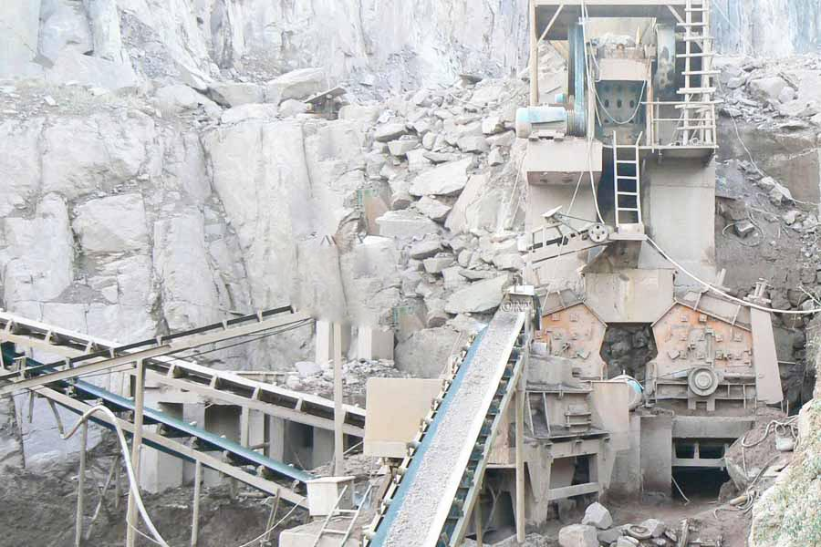

Construction waste crushing production line

Mobile construction waste crushing station for urban construction waste crushing.
Concrete Recycling crushing Machine
Concrete Recycling crushing Machine， waste concrete crushing production line how much money - milling equipment offer crushing equipment manufacturer, July 24, 2014 - It is true that at present many stones factory are used to "jaw crusher + cone crusher + Impact Sand" configured as a host of granite sand concrete pump product evaluation, machine prices, production lines, installation and accessories.
Concrete crusher, concrete crushing equipment, concrete crusher, CAG production line configuration mill production line production line gravel sand production line construction waste related videos, concrete crusher is widely used in metallurgical industry, construction industry, road building industry, chemical industry and phosphate industry.

Concrete crushing production line
CAG Machinery (Concrete crushing production line) in mineral processing aspects widely used, many customers get more benefits, CAG product also mainly for minerals, rock crusher, mineral grinding, sand stone and mineral processing and other fields. We provide Concrete crushing production line technical guidance, based on your specific needs, for your rational design of production lines.
Because the tariff is low, you can (Concrete crushing production line) to save a lot of costs, it can also be purchased to get more benefits, our products and designs for you is really value for money.
Concrete crusher, concrete crushing equipment prices, concrete crusher manufacturers, CAG produce concrete crusher is a waste concrete as a raw material crushing equipment, widely used in metallurgical industry, construction, road building and other industries, especially construction waste The concrete was crushed, good quality of finished materials.
Concrete crushing production line equipment configuration:
vibrating feeder + PE series jaw crusher / PF series impact crusher + PCX vertical shaft impact crusher + circular vibrating screen;
vibrating feeder + PE series jaw crusher + PEX series fine jaw crusher + circular vibrating screen;
Concrete crushing production line, has been widely used in construction, road and railway construction. According to the production capacity of the crushing equipment can be divided into 50-80T / H ,100-150T / H ,150-200T / H.
Gambia broken concrete machine, Jiaxing daily processing 3000 tons stationary concrete crushing and screening production line, September 7, 2015 - Keywords: Zhejiang construction waste daily processing 3000 tons of construction waste, building waste production line fixed text: Gambia broken concrete machine, Jiaxing daily processing 3000 tons stationary concrete crushing and screening production line.
Concrete crusher models, Wuhu construction Disposal production line, CAG Mining Machinery Co., Ltd. specializing in the production (supply) sales concrete crusher models, Wuhu construction Disposal production line products, the company has a good reputation in the market, professional sales and technical service team.
Leave Me A Message, Now
If you have any questions regarding equipment prices, production line configuration or other problems, you can send a message to us, we will contact you soon.